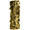

nicolasdestrac
2023
Props Maker : The Serpent Queen (Season 2) 2022 Props Maker : Franklin 2021 Model making assistant : John Wick : Chapitre 4 Accesoiriste de décor : Louis Vuitton Men's Spring-Summer 2022 Fashion Show Accesoiriste de décor : Consignes de sécurité Air France 2020 Assistant Accessoiriste de décor : "La Révolution" Assistant décorateur : Clip Kungs "Dopamine" 2019 Constructeur et accessoiriste de décor : publicité "Diesel" 2018 Constructeur de décor : Clip Rosalia "Bagdad (Cap.7 : Liturgia)" Assistant Accessoiriste de décor : "Sauver ou Périr" Constructeur et accessoiriste de décor : publicité "Replay Hyperflex" Accessoiriste de décor : Clip Julien Clerc "À vous jusqu'à la fin du monde" 2017 Montage à la suite de la construction du cadre de scène du CFPTS lors de la formation de constructeur de décors 2016 - 2017 Rippeur : "Stars 80, la suite" Troisiéme assistant décorateur : "Au revoir lé haut" 2016 Rippeur (renfort) : "Débarquement immédiat !" Troisiéme assistant décorateur : "Chocolat" 2014 Régisseur général : "i-D The A-Z of Beauty" Vidéo réalisée en 2012, musique par Loïc Penven (Glace_9) 2013 Vidéo réalisée en 2013 pour Workandprogress 2011 Assistant Accessoiriste de décor : "La lettre"
Justin Haythe, Lionsgate Television
Chef décorateur - Dan Weil
Tim Van Patten, Apple TV
Chef décorateur - Dan Weil
Chad Stahelski, Lionsgate Movies
Chef décorateur - Kevin Kavanaugh
Virgil Abloh, LaPac
Chef décorateur - Audrey Malecot
Romain Quirot, Else
Chef décorateur - Audrey Malecot
John Doe Productions
Chef décorateur - Gwendal Bescond
Nathanael Day, Val Production
Chef décorateur - Audrey Malecot
Mark Zibert, LaPac
Chef décorateur - Audrey Malecot
Helmi, Division
Chef décorateur - Baptiste Glaymann
Frédéric Tellier, Single Man Productions
Chef décorateur - Gwendal Bescond
Romain Chassaing, Solab
Chef décorateur - Audrey Malecot
Michel Gondry, Midi-Minuit
Chef décorateur - Fred Glon
Thomas Langmann, La Petite Reine
Chef décorateur - Jérémie Duchier
Albert Dupontel, ADCB Films
César des meilleurs décors 2018 - Pierre Quefféléan
Philippe de Chauveron, Les Films du 24
Chef décorateur - François Emmanuelli
Roshdy Zem, Mandarin Cinéma
César des meilleurs décors 2017 - Jérémie D. Lignol
Daniel Sannwald, Slowdance
Karl Lagerfeld, Walter Films